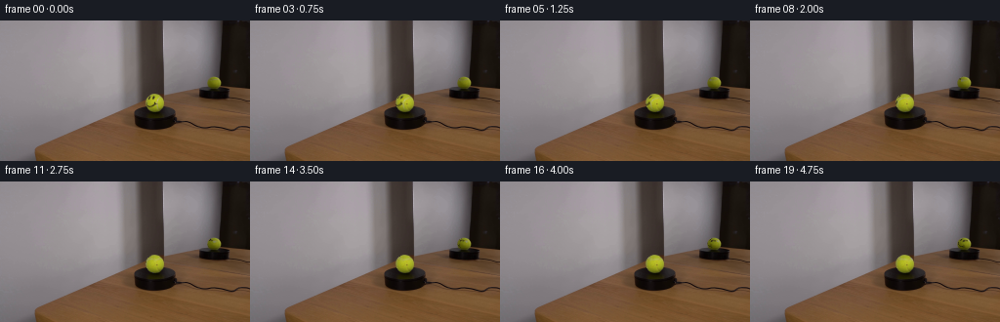
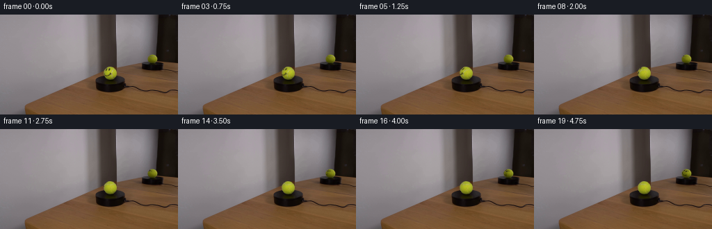
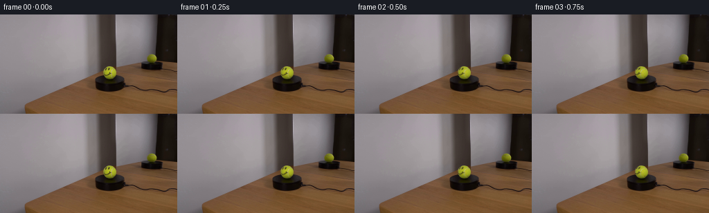

CODING AGENTS AS PIXEL WORLD MODELS
traex/GPT-6.1-Sol · 0118
点击播放 · 原生 RGB 像素
逐轮保存的候选
回放视频、检查图与代码变化。
每份候选均可单独播放。实际图片检查记录在下方工具轨迹中。
候选 01播放与检查图
点击播放 · 原生 RGB 像素

展开代码变化
--- 上一保存版本
+++ 本次保存版本
@@ -0,0 +1,176 @@
+"""A stationary photographed setup, with a turning spherical felt ball and its reflection."""
+from pathlib import Path
+import numpy as np
+from PIL import Image
+from scipy.ndimage import map_coordinates, gaussian_filter
+from scipy.interpolate import CubicSpline
+from scipy.spatial import cKDTree
+import artifact_io
+
+ROOT = Path(__file__).resolve().parent
+
+
+def smoothstep(a, b, x):
+ t = np.clip((x-a)/(b-a), 0., 1.)
+ return t*t*(3.-2.*t)
+
+
+def basis(beta, reflected=False):
+ a = np.deg2rad(19.)
+ r = np.array([np.cos(beta), 0., -np.sin(beta)])
+ if reflected:
+ r = -r
+ d = np.array([np.sin(beta)*np.sin(a), -np.cos(a), np.cos(beta)*np.sin(a)])
+ v = np.array([np.sin(beta)*np.cos(a), np.sin(a), np.cos(beta)*np.cos(a)])
+ return np.stack((r,d,v))
+
+
+def ball_model(image, geometry, reflected=False):
+ cx,cy,rx,ry = geometry
+ yy,xx = np.mgrid[:image.shape[0], :image.shape[1]]
+ u=(xx-cx)/rx; v=(yy-cy)/ry
+ r2=u*u+v*v; z=np.sqrt(np.maximum(0.,1-r2))
+ X=np.stack((u*0+1,u,v,z,u*v,u*u,v*v,u*z,v*z),-1)
+ if not reflected:
+ excluded = (((xx>=151)&(xx<=153)&(yy>=77)&(yy<=80)) |
+ ((xx>=155)&(xx<=158)&(yy>=77)&(yy<=80)) |
+ ((xx>=149)&(xx<=159)&(yy>=83)&(yy<=89)) |
+ ((xx>=160)&(xx<=165)&(yy>=77)&(yy<=92)))
+ else:
+ excluded = (yy>=59)&(yy<=61)
+ good=(r2<.83)&~excluded
+ coef=np.linalg.lstsq(X[good],image[good],rcond=None)[0]
+ base=np.clip(X@coef,0.,240.)
+ # The polynomial describes lighting, not the frame outside the silhouette.
+ base[...,0]=np.maximum(base[...,0],30.)
+ base[...,1]=np.maximum(base[...,1],30.)
+ base[...,2]=np.maximum(base[...,2],5.)
+ return base,u,v,z,r2
+
+
+def textures(image, base, reflected=False):
+ yy,xx=np.mgrid[:image.shape[0],:image.shape[1]]
+ rg=base[...,:2].mean(-1)
+ ink=np.zeros(rg.shape)
+ if not reflected:
+ eyes=(((xx>=151)&(xx<=154)&(yy>=77)&(yy<=81)) |
+ ((xx>=155)&(xx<=159)&(yy>=77)&(yy<=81)))
+ smile=((xx>=150)&(xx<=159)&(yy>=83)&(yy<=88))
+ # The two endpoints are deliberately retained; they turn with the face.
+ ink=np.clip((rg-image[...,:2].mean(-1))/(rg-40.),0.,1.)*(eyes|smile)
+ ink=np.where(ink>.04, ink, 0.)
+ area=(xx>=160)&(xx<=165)&(yy>=78)&(yy<=92)
+ else:
+ area=(xx>=213)&(xx<=226)&(yy>=59)&(yy<=61)
+ seam=np.clip((image[...,2]-base[...,2])/
+ np.maximum(20.,base[...,1]*.80-base[...,2]),0.,1.)*area
+ seam=np.where(seam>.045,seam,0.)
+ return ink,seam
+
+
+def project_texture(q, geom, B, tex):
+ local=q@B.T
+ cx,cy,rx,ry=geom
+ coordinates=np.array([cy+ry*local[...,1],cx+rx*local[...,0]])
+ sampled=map_coordinates(tex,coordinates,order=1,mode='constant',cval=0.)
+ return sampled,local[...,2]
+
+
+def make_seam_tree(B0, B1, geom0, geom1):
+ # A continuous seam through the two observed arcs. The remaining arc is
+ # behind both initial views and completes the same material line.
+ observed0=[(163.,91.2),(162.,90.),(161.4,88.5),(161.3,87.),
+ (161.,85.5),(161.,84.4),(160.8,83.),(161.,82.),
+ (161.5,81.),(163.,80.1),(165.,78.2)]
+ observed1=[(223.6,60.5),(222.4,60.4),(220.4,60.4),(218.4,60.2),
+ (216.4,60.),(214.7,60.1)]
+ def lift(points,geom,B):
+ pts=np.array(points);cx,cy,rx,ry=geom
+ u=(pts[:,0]-cx)/rx;v=(pts[:,1]-cy)/ry
+ return np.stack([u,v,np.sqrt(np.maximum(0,1-u*u-v*v))],-1)@B
+ pts=list(lift(observed0,geom0,B0))+list(lift(observed1,geom1,B1))
+ for longitude, latitude in [(224,28),(223,2),(203,-26),(161,-48),(107,-57),(67,-50)]:
+ lo,la=np.deg2rad([longitude,latitude])
+ pts.append(np.array([np.cos(la)*np.sin(lo),np.sin(la),np.cos(la)*np.cos(lo)]))
+ pts=np.array(pts+[pts[0]])
+ ts=np.r_[0,np.cumsum(np.linalg.norm(np.diff(pts,axis=0),axis=1))]
+ spline=CubicSpline(ts,pts,axis=0,bc_type='periodic')
+ curve=spline(np.linspace(0,ts[-1],1800,endpoint=False))
+ curve/=np.linalg.norm(curve,axis=1,keepdims=True)
+ return cKDTree(curve)
+
+
+def generate():
+ image=np.array(Image.open(ROOT/'first_frame.png').convert('RGB'),dtype=np.float64)
+ geom0=(158.20,84.20,9.65,9.65)
+ geom1=(219.15,63.45,7.25,6.65)
+ B0=basis(0.)
+ B1=basis(np.deg2rad(145.),True)
+ base0,u0,v0,z0,r20=ball_model(image,geom0)
+ base1,u1,v1,z1,r21=ball_model(image,geom1,True)
+ ink_map,seam0=textures(image,base0)
+ _,seam1=textures(image,base1,True)
+ tree=make_seam_tree(B0,B1,geom0,geom1)
+ yy,xx=np.mgrid[:144,:256]
+ views=[]
+ for geom,B,base,u,v,z,r2 in [(geom0,B0,base0,u0,v0,z0,r20),
+ (geom1,B1,base1,u1,v1,z1,r21)]:
+ # Everything outside each original outline stays bit-for-bit stationary.
+ coverage=np.clip((1.035-np.sqrt(r2))*min(geom[2:])+.12,0.,1.)
+ index=np.where(coverage>0)
+ normals=np.stack((u[index],v[index],z[index]),-1)@B
+ normals/=np.linalg.norm(normals,axis=1,keepdims=True)
+ views.append((index,normals,base[index],coverage[index]))
+
+ def material_features(theta,view):
+ index,p,shade,coverage=view
+ c,s=np.cos(theta),np.sin(theta)
+ q=p.copy()
+ q[:,0]=c*p[:,0]+s*p[:,2]
+ q[:,2]=-s*p[:,0]+c*p[:,2]
+ ink,front_z=project_texture(q,geom0,B0,ink_map)
+ ink*=smoothstep(.02,.16,front_z)
+ sf,zf=project_texture(q,geom0,B0,seam0)
+ sr,zr=project_texture(q,geom1,B1,seam1)
+ # Texture observations blend only in their common grazing-angle sliver.
+ wf=smoothstep(.02,.38,zf)**2*np.maximum(zf,0.)**5
+ wr=smoothstep(.02,.38,zr)**2*np.maximum(zr,0.)**5
+ dist=tree.query(q)[0]
+ hidden=.77*np.exp(-.5*(dist/.057)**2)
+ valid=smoothstep(.01,.12,np.maximum(zf,zr))
+ seam=(wf*sf+wr*sr)/np.maximum(1e-9,wf+wr)
+ seam=valid*seam+(1-valid)*hidden
+ ink_color=np.stack((shade[:,0]*.285,shade[:,1]*.245,
+ np.maximum(12.,shade[:,1]*.15)),axis=-1)
+ seam_color=np.stack((shade[:,0]*1.005,shade[:,1]*.97,
+ shade[:,1]*.80),axis=-1)
+ features=(seam_color-shade)*seam[:,None]
+ features=(1-ink[:,None])*features+(ink_color-shade)*ink[:,None]
+ # Subpixel felt variation turns along with the painted material, without
+ # changing the fixed key light, silhouettes, contact shadows or supports.
+ texture=(np.sin(141*q[:,0]+87*q[:,1]+67*q[:,2])*
+ np.sin(119*q[:,2]-53*q[:,0]+103*q[:,1]))
+ features+=texture[:,None]*np.array([.62,.65,.28])
+ return features*coverage[:,None]
+
+ zero=[material_features(0.,view) for view in views]
+ frames=np.empty((20,144,256,3),dtype=np.uint8)
+ frames[0]=image.astype(np.uint8)
+ for i in range(1,20):
+ # Clockwise as seen from above: a marked front surface goes left, around
+ # the side, then becomes visible in the horizontally reversed mirror.
+ theta=np.deg2rad(31.5)*(i/4.)
+ frame=image.copy()
+ for j,view in enumerate(views):
+ idx=view[0]
+ frame[idx]+=material_features(theta,view)-zero[j]
+ frames[i]=np.clip(np.rint(frame),0,255).astype(np.uint8)
+ artifact_io.save(frames,ROOT)
+ # Numerical diagnostics are useful when no image display is available.
+ np.savez_compressed(ROOT/'.tmp'/'material_maps.npz',ink=ink_map,seam_real=seam0,
+ seam_mirror=seam1,base_real=base0,base_mirror=base1)
+ return frames
+
+
+if __name__=='__main__':
+ generate()
候选 02播放与检查图
点击播放 · 原生 RGB 像素

展开代码变化
--- 上一保存版本
+++ 本次保存版本
@@ -53,9 +53,9 @@
rg=base[...,:2].mean(-1)
ink=np.zeros(rg.shape)
if not reflected:
- eyes=(((xx>=151)&(xx<=154)&(yy>=77)&(yy<=81)) |
+ eyes=(((xx>=152)&(xx<=154)&(yy>=77)&(yy<=81)) |
((xx>=155)&(xx<=159)&(yy>=77)&(yy<=81)))
- smile=((xx>=150)&(xx<=159)&(yy>=83)&(yy<=88))
+ smile=((xx>=150)&(xx<=161)&(yy>=83)&(yy<=88))
# The two endpoints are deliberately retained; they turn with the face.
ink=np.clip((rg-image[...,:2].mean(-1))/(rg-40.),0.,1.)*(eyes|smile)
ink=np.where(ink>.04, ink, 0.)
@@ -64,6 +64,9 @@
area=(xx>=213)&(xx<=226)&(yy>=59)&(yy<=61)
seam=np.clip((image[...,2]-base[...,2])/
np.maximum(20.,base[...,1]*.80-base[...,2]),0.,1.)*area
+ if reflected:
+ # Leftmost pixels blend with the silvery background, not a ball seam.
+ seam *= (xx>=217)
seam=np.where(seam>.045,seam,0.)
return ink,seam
@@ -151,9 +154,21 @@
texture=(np.sin(141*q[:,0]+87*q[:,1]+67*q[:,2])*
np.sin(119*q[:,2]-53*q[:,0]+103*q[:,1]))
features+=texture[:,None]*np.array([.62,.65,.28])
- return features*coverage[:,None]
+ return features*coverage[:,None], ink*coverage, seam*coverage
zero=[material_features(0.,view) for view in views]
+ observed=[]
+ for j,view in enumerate(views):
+ idx,_,shade,cov=view
+ original_ink=ink_map[idx] if j==0 else np.zeros(len(shade))
+ original_seam=(seam0 if j==0 else seam1)[idx]
+ ink_color=np.stack((shade[:,0]*.285,shade[:,1]*.245,
+ np.maximum(12.,shade[:,1]*.15)),axis=-1)
+ seam_color=np.stack((shade[:,0]*1.005,shade[:,1]*.97,
+ shade[:,1]*.80),axis=-1)
+ delta=(seam_color-shade)*original_seam[:,None]
+ delta=(1-original_ink[:,None])*delta+(ink_color-shade)*original_ink[:,None]
+ observed.append(delta*cov[:,None])
frames=np.empty((20,144,256,3),dtype=np.uint8)
frames[0]=image.astype(np.uint8)
for i in range(1,20):
@@ -163,7 +178,13 @@
frame=image.copy()
for j,view in enumerate(views):
idx=view[0]
- frame[idx]+=material_features(theta,view)-zero[j]
+ features, ink, seam=material_features(theta,view)
+ # Preserve the exact material impression at the start, but gradually
+ # retire its subpixel calibration residual. Otherwise a fleck of
+ # paint from the first photograph would remain fixed under the seam.
+ retire=smoothstep(0.,np.deg2rad(26.),theta)
+ correction=(1-retire)*zero[j][0]+retire*observed[j]
+ frame[idx]+=features-correction
frames[i]=np.clip(np.rint(frame),0,255).astype(np.uint8)
artifact_io.save(frames,ROOT)
# Numerical diagnostics are useful when no image display is available.
候选 03播放与检查图
点击播放 · 原生 RGB 像素


展开代码变化
--- 上一保存版本
+++ 本次保存版本
@@ -2,7 +2,7 @@
from pathlib import Path
import numpy as np
from PIL import Image
-from scipy.ndimage import map_coordinates, gaussian_filter
+from scipy.ndimage import map_coordinates
from scipy.interpolate import CubicSpline
from scipy.spatial import cKDTree
import artifact_io
@@ -104,6 +104,7 @@
def generate():
+ (ROOT/'.tmp').mkdir(exist_ok=True)
image=np.array(Image.open(ROOT/'first_frame.png').convert('RGB'),dtype=np.float64)
geom0=(158.20,84.20,9.65,9.65)
geom1=(219.15,63.45,7.25,6.65)
可观测工具轨迹
实际执行的命令与返回图片。
命令 1exit 0
/bin/bash -lc "ls -la && cat prompt.txt && printf '\\n---RULES---\\n' && cat GENERATION_RULES.md"
命令 2exit 0
/bin/bash -lc "cat artifact_io.py && python - <<'PY'
from PIL import Image
import numpy as np
im=np.array(Image.open('first_frame.png')); print(im.shape)
# ASCII dominant hue/brightness map at 2 pixel res
for y in range(0,144,3):
s=''
for x in range(0,256,3):
r,g,b=im[y:y+3,x:x+3].mean((0,1))
if max(r,g,b)<35: c='@'
elif max(r,g,b)<75: c='#'
elif max(r,g,b)-min(r,g,b)<12:c='.' if r>205 else ':' if r>140 else '+'
elif g>r*1.08 and g>b*1.14: c='G' if g>160 else 'g'
elif r>b*1.4 and g>b*1.4:c='Y' if r>150 else 'y'
elif r>g*1.2: c='R'
elif b>r*1.2: c='B'
else: c='-'
s+=c
print(f'{y:3} {s}')
PY"命令 3exit 0
/bin/bash -lc "python - <<'PY'
from PIL import Image
import numpy as np
im=np.array(Image.open('first_frame.png')).astype(float)
for y in range(0,144,8):
print(y,' '.join('%3d,%3d,%3d'%tuple(im[y:y+8,x:x+8].mean((0,1))) for x in range(0,256,8)))
# pixel dominant colorful max
for crit in [(im[:,:,1]>im[:,:,2]+25)&(im[:,:,0]>im[:,:,2]+20)&(im[:,:,1]>110),(im[:,:,1]>im[:,:,0]+10)]:
yy,xx=np.where(crit); print('box',xx.min(),xx.max(),yy.min(),yy.max());
for y in range(40,112):
a=xx[yy==y]
if len(a):print(y, a.min(),a.max())
PY"命令 4exit 0
/bin/bash -lc "python - <<'PY'
import numpy as np
from PIL import Image
im=np.array(Image.open('first_frame.png'))
for (x0,x1,y0,y1) in [(142,176,71,97),(208,231,53,72)]:
print('REGION',x0,x1,y0,y1,'luminance')
for y in range(y0,y1):
print(y, ''.join(' .:-=+*#%@'[min(9,int(np.mean(im[y,x]))//20)] for x in range(x0,x1)))
print('yellow coverage: #dark ink, Bbackground')
for y in range(y0,y1):
s=''
for x in range(x0,x1):
r,g,b=map(int,im[y,x]);
if r>b+20 and g>b+20: c='Y' if r+g>260 else 'y' if r+g>150 else 's' if r+g>90 else '.'
elif r+g+b<90:c='#'
else:c='B'
s+=c
print(y,s)
print('RGB')
for y in range(y0,y1):
print(y,' '.join('%d/%d/%d'%tuple(im[y,x]) for x in range(x0,x1)))
PY"命令 5exit 0
/bin/bash -lc "python - <<'PY'
import scipy, cv2
print('scipy',scipy.__version__,'cv2',cv2.__version__)
PY"命令 6exit 0
/bin/bash -lc "cat > .tmp/analyze.py <<'PY'
import numpy as np
from PIL import Image
from scipy.ndimage import gaussian_filter
im=np.array(Image.open('first_frame.png')).astype(float)
y,x=np.mgrid[:144,:256];nx=(x-158.15)/9.55;ny=(y-84.3)/9.6;rad=nx*nx+ny*ny;nz=np.sqrt(np.maximum(0,1-rad))
feat=((x>=151)&(x<=153)&(y>=77)&(y<=80))|((x>=155)&(x<=158)&(y>=77)&(y<=80))|((x>=149)&(x<=159)&(y>=83)&(y<=89))|((x>=160)&(x<=164)&(y>=78)&(y<=92))
X=np.stack([np.ones_like(nx),nx,ny,nz,nx*ny,nx**2,ny**2,nx*nz,ny*nz],-1)
ok=(rad<.86)&~feat
coef=np.linalg.lstsq(X[ok],im[ok],rcond=None)[0];pred=X@coef
print('R/G model')
for yy in range(75,94):
print(yy, ' '.join('%3d'%round((im[yy,xx,:2].mean()-pred[yy,xx,:2].mean())) for xx in range(149,169)))
print('B model')
for yy in range(75,94):
print(yy, ' '.join('%3d'%round(im[yy,xx,2]-pred[yy,xx,2]) for xx in range(149,169)))
print(coef)
PY
python .tmp/analyze.py"命令 7exit 0
/bin/bash -lc "cat >> .tmp/analyze.py <<'PY'
print('dark alpha')
for yy in range(76,90):
print(yy,' '.join('%2d'%round(max(0,min(1,(pred[yy,xx,:2].mean()-im[yy,xx,:2].mean())/(pred[yy,xx,:2].mean()-32)))*9) for xx in range(149,161)))
PY
python .tmp/analyze.py | tail -15"命令 8exit 0
/bin/bash -lc "python - <<'PY'
import numpy as np
for typ,ps in [('real',[(165,78.2),(163,80.1),(161.5,81),(161,84.4),(161.3,87),(162,90),(163,91.2)]),('mir',[(214.7,60.1),(216.4,60),(218.4,60.2),(220.4,60.4),(223.6,60.5),(225.2,60.7)])]:
b=np.deg2rad(0 if typ=='real' else 145); a=np.deg2rad(20);r=np.array([1,0,0]) if typ=='real' else np.array([-np.cos(b),0,np.sin(b)]);d=np.array([np.sin(b)*np.sin(a),-np.cos(a),np.cos(b)*np.sin(a)]);w=np.array([np.sin(b)*np.cos(a),np.sin(a),np.cos(b)*np.cos(a)])
print(typ)
for x,y in ps:
nx=(x-(158.2 if typ=='real' else 219.2))/(9.6 if typ=='real' else 7.2);ny=(y-(84.2 if typ=='real' else 63.5))/(9.6 if typ=='real' else 6.65);nz=np.sqrt(max(0,1-nx*nx-ny*ny));p=nx*r+ny*d+nz*w
print(np.round(p,3),'lon',np.degrees(np.arctan2(p[0],p[2])).round(1),'lat',np.degrees(np.arcsin(p[1])).round(1))
PY"命令 9exit 0
/bin/bash -lc "cat > .tmp/fitseam.py <<'PY'
import numpy as np
from scipy.spatial.transform import Rotation
from scipy.optimize import least_squares
rng=np.random.default_rng(11)
real=np.array([(165,78.2),(163,80.1),(161.5,81),(161,82),(160.8,83),(161,84.4),(161,85.5),(161.3,87),(161.4,88.5),(162,90),(163,91.2)])
mir=np.array([(214.7,60.1),(216.4,60),(218.4,60.2),(220.4,60.4),(222.4,60.4),(223.6,60.5),(225.2,60.7)])
alpha=np.deg2rad(19)
def nvec(pts,cx,cy,rx,ry,b,flip):
nx=(pts[:,0]-cx)/rx;ny=(pts[:,1]-cy)/ry;nz=np.sqrt(np.maximum(0,1-nx**2-ny**2))
r=flip*np.array([np.cos(b),0,-np.sin(b)]);d=np.array([np.sin(b)*np.sin(alpha),-np.cos(alpha),np.cos(b)*np.sin(alpha)]);w=np.array([np.sin(b)*np.cos(alpha),np.sin(alpha),np.cos(b)*np.cos(alpha)])
return nx[:,None]*r+ny[:,None]*d+nz[:,None]*w
p0=nvec(real,158.2,84.2,9.65,9.65,0,1)
# fit rotation+amp via implicit latitude-h sin(2longitude), reflection orientation parameter too
def cost(params):
rot=Rotation.from_rotvec(params[:3]).as_matrix();h=params[3];beta=params[4]
p1=nvec(mir,219.15,63.45,7.15,6.6,beta,-1)
ps=np.r_[p0,p1]@rot
return ps[:,1]-h*2*ps[:,0]*ps[:,2]/np.maximum(.08,1-ps[:,1]**2)
best=None
for i in range(100):
init=np.r_[rng.normal(0,1,3)*2,rng.uniform(.4,.9),np.deg2rad(rng.uniform(118,155))]
fit=least_squares(cost,init,bounds=([-10,-10,-10,.25,np.deg2rad(110)],[10,10,10,.95,np.deg2rad(160)]),max_nfev=300)
err=np.mean(cost(fit.x)**2)
if best is None or err<best[0]:best=(err,fit.x)
print(best)
rot=Rotation.from_rotvec(best[1][:3]).as_matrix();print('R',rot,'h',best[1][3],'beta',np.rad2deg(best[1][4]))
print('res',cost(best[1]))
np.savez('.tmp/seam_fit.npz',rot=rot,h=best[1][3],beta=best[1][4])
PY
OPENBLAS_NUM_THREADS=1 python .tmp/fitseam.py"命令 10exit 0
/bin/bash -lc "python - <<'PY'
exec(open('.tmp/analyze.py').read().split(\"print('R/G model')\")[0])
# mirrored polynomial
nx=(x-219.1)/7.3;ny=(y-63.35)/6.65;rr=nx**2+ny**2;nz=np.sqrt(np.maximum(0,1-rr))
X=np.stack([nx*0+1,nx,ny,nz,nx*ny,nx**2,ny**2,nx*nz,ny*nz],-1)
ok=(rr<.8)&~((y>=59)&(y<=61))
coef=np.linalg.lstsq(X[ok],im[ok],rcond=None)[0];pred=X@coef
for yy in range(58,70):
print(yy,' '.join('%3d/%3d/%3d'%tuple(pred[yy,xx].round().astype(int)) for xx in range(213,227)))
PY"命令 11exit 0
/bin/bash -lc "cat > generate.py <<'PY'
\"\"\"A stationary photographed setup, with a turning spherical felt ball and its reflection.\"\"\"
from pathlib import Path
import numpy as np
from PIL import Image
from scipy.ndimage import map_coordinates, gaussian_filter
from scipy.interpolate import CubicSpline
from scipy.spatial import cKDTree
import artifact_io
ROOT = Path(__file__).resolve().parent
def smoothstep(a, b, x):
t = np.clip((x-a)/(b-a), 0., 1.)
return t*t*(3.-2.*t)
def basis(beta, reflected=False):
a = np.deg2rad(19.)
r = np.array([np.cos(beta), 0., -np.sin(beta)])
if reflected:
r = -r
d = np.array([np.sin(beta)*np.sin(a), -np.cos(a), np.cos(beta)*np.sin(a)])
v = np.array([np.sin(beta)*np.cos(a), np.sin(a), np.cos(beta)*np.cos(a)])
return np.stack((r,d,v))
def ball_model(image, geometry, reflected=False):
cx,cy,rx,ry = geometry
yy,xx = np.mgrid[:image.shape[0], :image.shape[1]]
u=(xx-cx)/rx; v=(yy-cy)/ry
r2=u*u+v*v; z=np.sqrt(np.maximum(0.,1-r2))
X=np.stack((u*0+1,u,v,z,u*v,u*u,v*v,u*z,v*z),-1)
if not reflected:
excluded = (((xx>=151)&(xx<=153)&(yy>=77)&(yy<=80)) |
((xx>=155)&(xx<=158)&(yy>=77)&(yy<=80)) |
((xx>=149)&(xx<=159)&(yy>=83)&(yy<=89)) |
((xx>=160)&(xx<=165)&(yy>=77)&(yy<=92)))
else:
excluded = (yy>=59)&(yy<=61)
good=(r2<.83)&~excluded
coef=np.linalg.lstsq(X[good],image[good],rcond=None)[0]
base=np.clip(X@coef,0.,240.)
# The polynomial describes lighting, not the frame outside the silhouette.
base[...,0]=np.maximum(base[...,0],30.)
base[...,1]=np.maximum(base[...,1],30.)
base[...,2]=np.maximum(base[...,2],5.)
return base,u,v,z,r2
def textures(image, base, reflected=False):
yy,xx=np.mgrid[:image.shape[0],:image.shape[1]]
rg=base[...,:2].mean(-1)
ink=np.zeros(rg.shape)
if not reflected:
eyes=(((xx>=151)&(xx<=154)&(yy>=77)&(yy<=81)) |
((xx>=155)&(xx<=159)&(yy>=77)&(yy<=81)))
smile=((xx>=150)&(xx<=159)&(yy>=83)&(yy<=88))
# The two endpoints are deliberately retained; they turn with the face.
ink=np.clip((rg-image[...,:2].mean(-1))/(rg-40.),0.,1.)*(eyes|smile)
ink=np.where(ink>.04, ink, 0.)
area=(xx>=160)&(xx<=165)&(yy>=78)&(yy<=92)
else:
area=(xx>=213)&(xx<=226)&(yy>=59)&(yy<=61)
seam=np.clip((image[...,2]-base[...,2])/
np.maximum(20.,base[...,1]*.80-base[...,2]),0.,1.)*area
seam=np.where(seam>.045,seam,0.)
return ink,seam
def project_texture(q, geom, B, tex):
local=q@B.T
cx,cy,rx,ry=geom
coordinates=np.array([cy+ry*local[...,1],cx+rx*local[...,0]])
sampled=map_coordinates(tex,coordinates,order=1,mode='constant',cval=0.)
return sampled,local[...,2]
def make_seam_tree(B0, B1, geom0, geom1):
# A continuous seam through the two observed arcs. The remaining arc is
# behind both initial views and completes the same material line.
observed0=[(163.,91.2),(162.,90.),(161.4,88.5),(161.3,87.),
(161.,85.5),(161.,84.4),(160.8,83.),(161.,82.),
(161.5,81.),(163.,80.1),(165.,78.2)]
observed1=[(223.6,60.5),(222.4,60.4),(220.4,60.4),(218.4,60.2),
(216.4,60.),(214.7,60.1)]
def lift(points,geom,B):
pts=np.array(points);cx,cy,rx,ry=geom
u=(pts[:,0]-cx)/rx;v=(pts[:,1]-cy)/ry
return np.stack([u,v,np.sqrt(np.maximum(0,1-u*u-v*v))],-1)@B
pts=list(lift(observed0,geom0,B0))+list(lift(observed1,geom1,B1))
for longitude, latitude in [(224,28),(223,2),(203,-26),(161,-48),(107,-57),(67,-50)]:
lo,la=np.deg2rad([longitude,latitude])
pts.append(np.array([np.cos(la)*np.sin(lo),np.sin(la),np.cos(la)*np.cos(lo)]))
pts=np.array(pts+[pts[0]])
ts=np.r_[0,np.cumsum(np.linalg.norm(np.diff(pts,axis=0),axis=1))]
spline=CubicSpline(ts,pts,axis=0,bc_type='periodic')
curve=spline(np.linspace(0,ts[-1],1800,endpoint=False))
curve/=np.linalg.norm(curve,axis=1,keepdims=True)
return cKDTree(curve)
def generate():
image=np.array(Image.open(ROOT/'first_frame.png').convert('RGB'),dtype=np.float64)
geom0=(158.20,84.20,9.65,9.65)
geom1=(219.15,63.45,7.25,6.65)
B0=basis(0.)
B1=basis(np.deg2rad(145.),True)
base0,u0,v0,z0,r20=ball_model(image,geom0)
base1,u1,v1,z1,r21=ball_model(image,geom1,True)
ink_map,seam0=textures(image,base0)
_,seam1=textures(image,base1,True)
tree=make_seam_tree(B0,B1,geom0,geom1)
yy,xx=np.mgrid[:144,:256]
views=[]
for geom,B,base,u,v,z,r2 in [(geom0,B0,base0,u0,v0,z0,r20),
(geom1,B1,base1,u1,v1,z1,r21)]:
# Everything outside each original outline stays bit-for-bit stationary.
coverage=np.clip((1.035-np.sqrt(r2))*min(geom[2:])+.12,0.,1.)
index=np.where(coverage>0)
normals=np.stack((u[index],v[index],z[index]),-1)@B
normals/=np.linalg.norm(normals,axis=1,keepdims=True)
views.append((index,normals,base[index],coverage[index]))
def material_features(theta,view):
index,p,shade,coverage=view
c,s=np.cos(theta),np.sin(theta)
q=p.copy()
q[:,0]=c*p[:,0]+s*p[:,2]
q[:,2]=-s*p[:,0]+c*p[:,2]
ink,front_z=project_texture(q,geom0,B0,ink_map)
ink*=smoothstep(.02,.16,front_z)
sf,zf=project_texture(q,geom0,B0,seam0)
sr,zr=project_texture(q,geom1,B1,seam1)
# Texture observations blend only in their common grazing-angle sliver.
wf=smoothstep(.02,.38,zf)**2*np.maximum(zf,0.)**5
wr=smoothstep(.02,.38,zr)**2*np.maximum(zr,0.)**5
dist=tree.query(q)[0]
hidden=.77*np.exp(-.5*(dist/.057)**2)
valid=smoothstep(.01,.12,np.maximum(zf,zr))
seam=(wf*sf+wr*sr)/np.maximum(1e-9,wf+wr)
seam=valid*seam+(1-valid)*hidden
ink_color=np.stack((shade[:,0]*.285,shade[:,1]*.245,
np.maximum(12.,shade[:,1]*.15)),axis=-1)
seam_color=np.stack((shade[:,0]*1.005,shade[:,1]*.97,
shade[:,1]*.80),axis=-1)
features=(seam_color-shade)*seam[:,None]
features=(1-ink[:,None])*features+(ink_color-shade)*ink[:,None]
# Subpixel felt variation turns along with the painted material, without
# changing the fixed key light, silhouettes, contact shadows or supports.
texture=(np.sin(141*q[:,0]+87*q[:,1]+67*q[:,2])*
np.sin(119*q[:,2]-53*q[:,0]+103*q[:,1]))
features+=texture[:,None]*np.array([.62,.65,.28])
return features*coverage[:,None]
zero=[material_features(0.,view) for view in views]
frames=np.empty((20,144,256,3),dtype=np.uint8)
frames[0]=image.astype(np.uint8)
for i in range(1,20):
# Clockwise as seen from above: a marked front surface goes left, around
# the side, then becomes visible in the horizontally reversed mirror.
theta=np.deg2rad(31.5)*(i/4.)
frame=image.copy()
for j,view in enumerate(views):
idx=view[0]
frame[idx]+=material_features(theta,view)-zero[j]
frames[i]=np.clip(np.rint(frame),0,255).astype(np.uint8)
artifact_io.save(frames,ROOT)
# Numerical diagnostics are useful when no image display is available.
np.savez_compressed(ROOT/'.tmp'/'material_maps.npz',ink=ink_map,seam_real=seam0,
seam_mirror=seam1,base_real=base0,base_mirror=base1)
return frames
if __name__=='__main__':
generate()
PY
OPENBLAS_NUM_THREADS=1 python generate.py"命令 12exit 0
/bin/bash -lc "python - <<'PY'
from PIL import Image
import numpy as np
maps=np.load('.tmp/material_maps.npz')
for name in ('ink','seam_real','seam_mirror'):
a=maps[name];print(name,'sum',a.sum(),'max',a.max())
for y in range(57,94):
xs=range(149,168) if name"'!='"'seam_mirror' else range(212,227)
vals=a[y,list(xs)]
if vals.max()>.01: print(y,''.join(' .:-=+*#%@'[min(9,round(v*9))] for v in vals))
for i in (0,1,3,6,10,14,19):
a=np.array(Image.open(f'frames/{i:02d}.png'));print('FRAME',i)
for x0,x1,y0,y1 in [(149,168,75,94),(212,227,57,70)]:
for y in range(y0,y1):
print(y,''.join(' .:-=+*#%@'[min(9,int(np.mean(a[y,x]))//20)] for x in range(x0,x1)))
orig=np.array(Image.open('first_frame.png'))
end=np.array(Image.open('frames/19.png'))
idx=np.any(end"'!=orig,axis=2); yy,xx=np.where(idx);print('"'modified',idx.sum(), 'box',xx.min(),xx.max(), yy.min(),yy.max())
PY"命令 13exit 0
/bin/bash -lc "python - <<'PY'
import numpy as np
from PIL import Image
m=np.load('.tmp/material_maps.npz');im=np.array(Image.open('first_frame.png')).astype(float);base=m['base_real']
for y in range(83,89):
print(y,[(x, (base[y,x,:2].mean()-im[y,x,:2].mean()).round(1)) for x in range(149,163)])
PY"命令 14exit 0
/bin/bash -lc "OPENBLAS_NUM_THREADS=1 python generate.py && python - <<'PY'
from PIL import Image
import numpy as np
p=np.load('pixels.npz')['pixels'];print('tensor',p.shape,p.dtype)
a=np.array(Image.open('first_frame.png')); b=np.array(Image.open('frames/00.png'));print('first frame identical:',np.array_equal(a,b))
frames=np.array([np.array(Image.open(f'frames/{i:02d}.png')) for i in range(20)])
print('video',frames.shape,frames.dtype)
print('consecutive changed pixels:',np.any(frames[1:]"'!=frames[:-1],axis=-1).sum((1,2)).tolist())
for i in (0,4,10,19):
print('"'FRAME',i)
aa=frames[i]
for x0,x1,y0,y1 in [(149,168,75,94),(212,227,57,70)]:
for y in range(y0,y1):
print(y,''.join(' .:-=+*#%@'[min(9,int(np.mean(aa[y,x]))//20)] for x in range(x0,x1)))
PY"命令 15exit 0
/bin/bash -lc "OPENBLAS_NUM_THREADS=1 python generate.py && ls -lh pixels.npz index.html generate.py && python - <<'PY'
import numpy as np
from PIL import Image
first=np.array(Image.open('first_frame.png').convert('RGB'))
p=np.load('pixels.npz')['pixels']
a=np.stack(((p[:,:,0]>>16)&255,(p[:,:,0]>>8)&255,p[:,:,0]&255),axis=-1).astype('uint8')
assert np.array_equal(first,a)
print('Validated 20 RGB frames, 256Ã144; initial frame pixel-identical.')
PY"保存候选 3 份；完成命令 15 次；可验证图片返回 0 张。原始 API 响应与完整日志保留在本地。